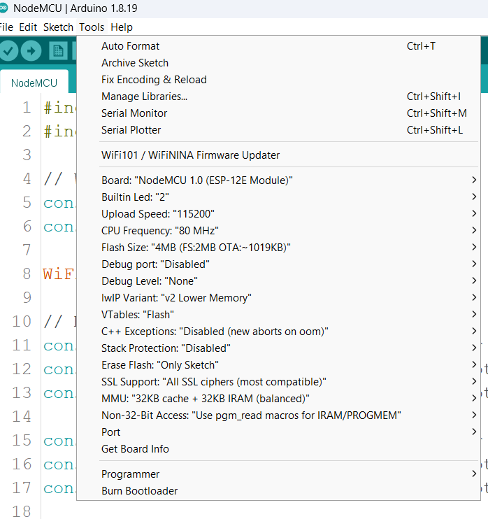

Day 01: Gesture Controlled Robot with OpenCV and ESP
Day 01 - Gesture Controlled Robot
This Python script captures hand gestures using MediaPipe, classifies them using a custom-trained model, and sends the gesture index to an ESP device over a TCP socket connection.
The robot is gesture-controlled, meaning it performs specific actions based on the hand gestures detected by a camera. It uses an ESP-based microcontroller to receive commands over Wi-Fi. The ESP processes these commands (gesture indices) and controls the robot’s movements or actions accordingly.
CODE
STEPS TO IMPLEMENT:
*Make sure Arduino IDE, Python, VS Code, and IPWebcam is installed as per the pre-workshop guide.
Mobile Hotspot
- Search for mobile hotspot on your laptop.

- Check the
Propertiessection and make sure that theBandis 2.4 GHz. If not, click theEditbutton and change it. - Note the
NameandPasswordof the hotspot. - Switch the hotspot on.
NodeMCU
- Connect the NodeMCU to your laptop.
- Open
Gesture.inoin the Gesture folder in Arduino IDE. Click theToolsbutton.  - In
Board, choose “NodeMCU 1.0 (ESP-12E Module)”. - If
Portis greyed out:- Make sure that you have connected NodeMCU to the laptop.
- Make sure you have installed the required drivers
- Go to this G-drive link , download the entire zip file, extract it & then Install the recommended version for your OS
- After installing, restart the laptop.
- Click the
Uploadbutton.
- If there is any error like “Timed out… Connecting…”:
- Try removing the NodeMCU slowly from the breadboard and then uploading.
- Once successfully uploaded, open the Serial monitor (button in the top-right)
- It should show “Connecting to Wifi…”. And then once connected, “Connected to Wi-Fi. IP Address:”. The IP that follow’s is your ESP IP that should be used in the Python file.
Python server
- Download the .zip file for the code and extract it.
- Open VS Code
- Click
Filein the top-left. Then clickOpen Folderand open the extracted folder. - Double click on
detect_gesture.pyin VS Code. - Change
ESP_IPto the NodeMCU IP we got from the Serial Monitor. - Run the python file with the Run button (Triangle button) in the top-right of VSCODE
- If not seen, install the Python extension in VS CODE. Click
Ctrl+Shift+X. Search for python and install the extension.
- If not seen, install the Python extension in VS CODE. Click
- If any error like package not found:
- Run in terminal
py -m pip install opencv-python mediapipe simple_pid torch tensorflow pandas ultralyticsorpython -m pip install opencv-python mediapipe simple_pid torch tensorflow pandas ultralytics - If you are not able to install mediapipe, make sure that you are using Python 3.11. Refer to the pre-workshop guide on how to download Python 3.11.
- Run in terminal
- If you encounter
DLL Error(Dynamic LinkedIn Library – initialisation routine failed)- Run in terminal
py -m pip install msvc-runtime
- Run in terminal
How It Works
-
Hand Gesture Detection:
- Uses MediaPipe Hands to detect hand landmarks (e.g., fingertips, knuckles).
- These landmarks are processed by a pre-trained model (
KeyPointClassifier) to classify the current gesture.
-
Data Transmission:
- The recognized gesture index (a number representing the gesture) is sent to the ESP microcontroller over a TCP socket connection.
-
ESP Response:
- The ESP processes the received index and controls the robot based on the predefined gesture mappings.
Libraries and Tools
import cv2
import mediapipe as mp
import socket
from model import KeyPointClassifier
import landmark_utils as u
Key Libraries:
cv2: OpenCV library for video capture and image processing.mediapipe: Library for detecting and tracking hand landmarks.socket: Provides support for network communication to send data to the ESP device.KeyPointClassifier: A custom model that classifies hand gestures.landmark_utils: A custom utility module to process hand landmarks into the required format for classification.
Gesture Mappings
gestures = {
0: "Open Hand",
1: "Thumb up",
2: "OK",
3: "Peace",
4: "No Hand Detected"
}
- Maps numerical gesture indices (output of
KeyPointClassifier) to readable gesture names. - Defaults to
4(“No Hand Detected”) if no hand is detected.
Connection Setup
ESP_IP = "192.168.137.89" # Replace with your ESP's IP address
ESP_PORT = 80 # Replace with your ESP's listening port
client_socket = socket.socket(socket.AF_INET, socket.SOCK_STREAM)
client_socket.connect((ESP_IP, ESP_PORT))
print(f"Connected to ESP at {ESP_IP}:{ESP_PORT}")
- Sets up a TCP socket for communication with the ESP microcontroller.
- Replace
ESP_IPandESP_PORTwith your ESP’s IP address and port.
Hand Detection and Gesture Classification
Initialize MediaPipe Hands
mp_drawing = mp.solutions.drawing_utils
mp_drawing_styles = mp.solutions.drawing_styles
mp_hands = mp.solutions.hands
cap = cv2.VideoCapture(0)
with mp_hands.Hands(
model_complexity=0,
min_detection_confidence=0.5,
min_tracking_confidence=0.5
) as hands:
mp_hands.Hands: Detects hands in the video feed.- Parameters:
model_complexity: Determines model complexity (lower = faster).min_detection_confidence: Threshold for detecting a hand.min_tracking_confidence: Threshold for tracking detected hands.
Process Video Feed
while cap.isOpened():
success, frame = cap.read()
if not success:
print("Ignoring empty camera frame.")
continue
image.flags.writeable = False
rgb_frame = cv2.cvtColor(frame, cv2.COLOR_BGR2RGB)
results = hands.process(rgb_frame)
frame.flags.writeable = True
bgr_frame = cv2.cvtColor(rgb_frame, cv2.COLOR_RGB2BGR)
gesture_index = 4 # Default to "No Hand Detected"
- Reads frames from the webcam.
- Converts each frame to RGB format and processes it with MediaPipe.
- Initializes
gesture_indexas4(No Hand Detected).
Detect and Classify Gestures
if results.multi_hand_landmarks:
for hand_landmarks in results.multi_hand_landmarks:
landmark_list = u.calc_landmark_list(bgr_frame, hand_landmarks)
keypoints = u.pre_process_landmark(landmark_list)
gesture_index = kpclf(keypoints)
mp_drawing.draw_landmarks(
bgr_frame,
hand_landmarks,
mp_hands.HAND_CONNECTIONS,
mp_drawing_styles.get_default_hand_landmarks_style(),
mp_drawing_styles.get_default_hand_connections_style()
)
-
Landmark Processing:
calc_landmark_list: Extracts landmark coordinates.pre_process_landmark: Prepares data for the classifier.kpclf: Classifies the landmarks into gestures.
-
Draws landmarks and connections on the video feed.
Send Gesture to ESP
print(f"Detected Gesture Index: {gesture_index}")
gesture_data = (str(gesture_index) + "\n").encode()
client_socket.sendall(gesture_data)
- Prints the detected gesture index.
- Sends the index to the ESP device via the TCP socket.
Display Video Feed
final = cv2.flip(bgr_frame, 1)
cv2.putText(final, gestures[gesture_index],
(10, 30), cv2.FONT_HERSHEY_DUPLEX, 1, 255)
cv2.imshow('MediaPipe Hands', final)
if cv2.waitKey(5) & 0xFF == 27:
break
- Flips the frame horizontally for a selfie view.
- Displays the gesture name on the frame.
- Terminates the loop when the Esc key is pressed.
Cleanup
cap.release()
client_socket.close()
cv2.destroyAllWindows()
print("Connection closed.")
- Releases the camera and closes the socket connection.
- Destroys all OpenCV windows.